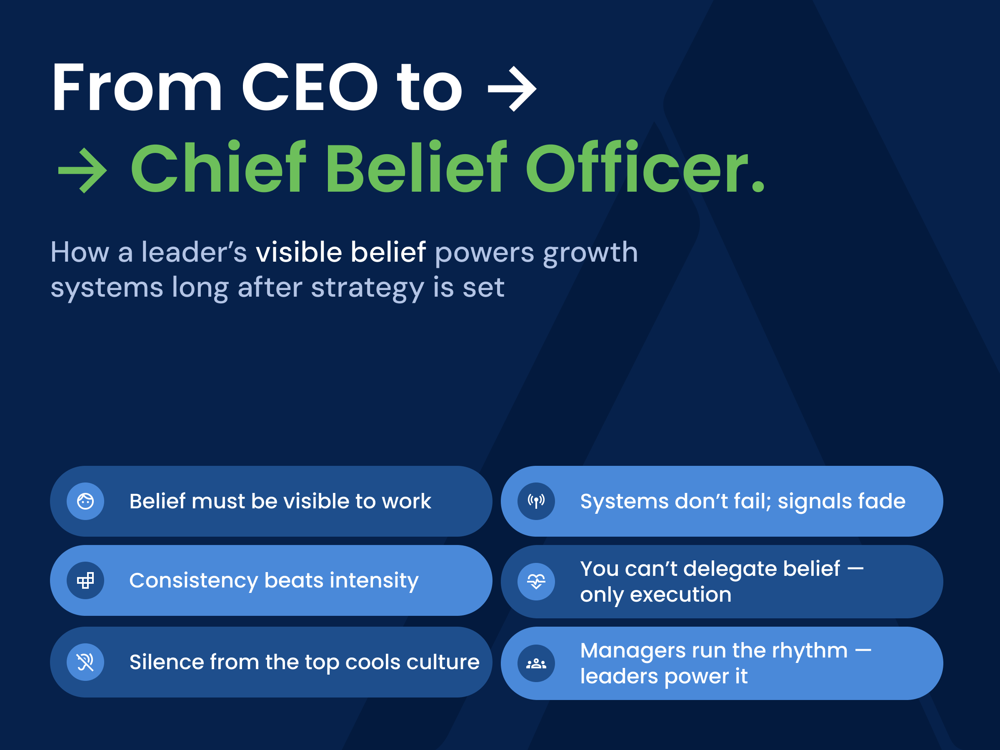
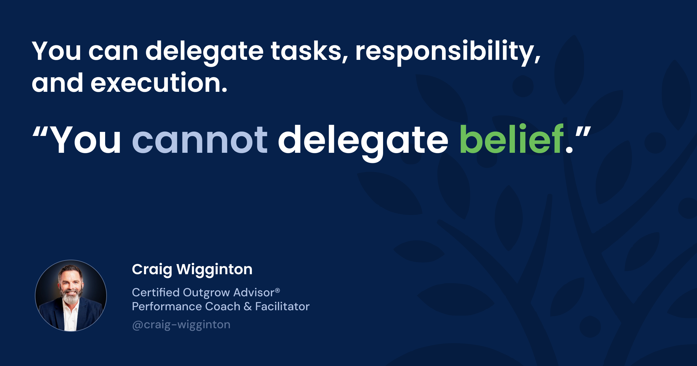
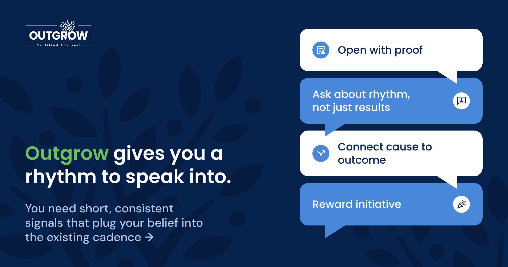

From Pressure to Predictability: How Mid-Level Managers Anchor Accountability
Why accountability fails when it shows up too late — and how manager accountability, rhythm, and weekly conversation create predictable performance.
ReadRun Outgrow · CEO series, part 5

Every company reflects its leader. Not just your strategy, but your energy.
If you are urgent, the company moves quickly. If you are cautious, the company hesitates. When you are visibly optimistic, people find reasons to act. When you grow quiet, so does everyone else.
That is why so many good systems flatten over time. You put in structure. You hire strong managers. You launch Outgrow. For a while the rhythm is alive. Huddles are running. Metrics move. Customers feel the difference.
Then your attention shifts. An acquisition, a crisis, a big project. You assume the system will carry itself.
On the surface it does. The meetings are still on the calendar. The reports still go out. But the energy changes. Managers go through the motions. Teams check boxes. Conversations slowly drift from proactive growth back to problems, tickets, and logistics.
The system is still there. The signal is not.
Outgrow was built to be your amplifier, not your replacement. It lets managers turn your belief into weekly behavior. It cannot supply the belief itself. That part is still yours.
The most understandable mistake in mid market leadership is this: you try to delegate culture.
You do the hard work up front. You install a proactive growth system, empower managers, and declare that Outgrow is how you want to grow. The company becomes more predictable. The pressure in your shoulders eases a little.
So you step back.
It feels rational. The system is working. The managers are engaged. The dashboards look good.
But culture does not stay vibrant on autopilot. It runs on attention, not intention.
When you pull your presence out of the rhythm, belief begins to thin out. Managers still run the meetings, but with a little less conviction. They still track activity, but with a little less enthusiasm. The weekly huddle starts to feel like one more task instead of a lifeline.
Nothing blows up. It just cools.
Silence from the top is always interpreted as permission to stop.
You can delegate tasks, responsibility, and execution. You cannot delegate belief. That has to travel in your voice, your questions, your curiosity. Without that visible signal, even the best designed system slowly becomes procedural and uninspiring.

Every CEO believes in their people and in growth. The gap is not belief. It is how often the company hears it from you.
Inside your head, the message feels obvious. It is on the walls, in the values, in the strategy deck. Surely everyone knows.
But people do not remember what you believe. They remember what you repeat.
Belief that stays unspoken starts to decay. It becomes background noise. Everyone assumes it is there, but no one feels it. That is how cultures drift. Not through bad intent, but through quiet leadership.
Outgrow gives you a rhythm to speak into. You do not need long speeches. You need short, consistent signals that plug your belief into the existing cadence:
These touches take seconds, but the repetition compounds. Over time your language becomes the operating language of the company. Managers begin to say what you say. Teams begin to do what managers do.
That is belief turning into muscle memory.

From the inside, it can feel like you are everywhere. Your name is on the emails. Your strategy is on the slides. Your phrases show up in decks.
From the front line, the reality is simpler. If they have not seen or heard you recently, you are far away.
Visibility is not about volume. It is about being seen in the moments that matter. When you connect yourself publicly to Outgrow, you create a loop that keeps the whole system charged without micromanaging it.
That loop can be very simple:
When you repeat these four moves, you create predictable contact between your belief and the system. Managers feel your eyes on the right things. Teams see that the rhythm is not a flavor of the month initiative. It is how this company works.
Consistency beats intensity. One calm, repeated message is more powerful than a brilliant speech that everyone forgets two weeks later.
As your company grows, your calendar fills with strategy, finance, and complexity. It is easy to slip into the role of Chief Management Officer.
Outgrow invites a different identity: moving from CEO to Chief Belief Officer — the leader who doesn’t run the system, but continuously powers it.
You are not the person who runs the rhythm. Your managers do that. You are the person who powers it.
Being Chief Belief Officer does not mean hype. It means that no one ever has to guess what matters, because you keep showing them. It means managers never wonder if Outgrow still counts, because they see you protecting it. It means customers feel, through your people, that this is a company that believes in reaching out first and helping more.
Do this, and you stop having to “restart culture” every year. Belief becomes self-sustaining. It moves through the company like current: quiet but constant, powering managers, teams, and customer experiences.
Outgrow is led by the CEO or owner. It is not run by this person, but it is energized and encouraged by them.
That is the work. Not to carry the whole company on your shoulders, but to charge the system that carries your conviction into every room you are not in. When you lead that way, growth stops depending on pressure and starts flowing from presence.
Keep reading
Why accountability fails when it shows up too late — and how manager accountability, rhythm, and weekly conversation create predictable performance.
ReadLearn how managers operationalize belief through a simple weekly rhythm that turns proactive intent into consistent, measurable growth.
ReadStruggling with a revenue plateau? Discover how manager-led weekly rhythms rebuild momentum and spark organic growth.
Read